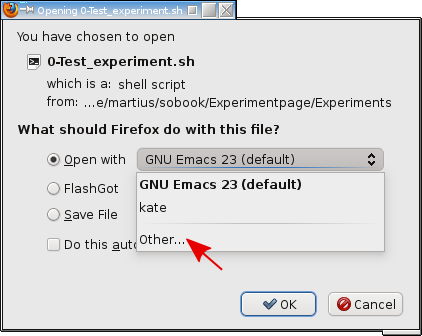
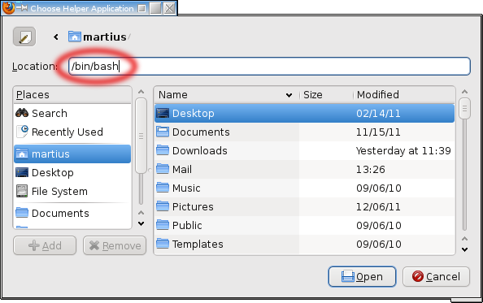

Contents
Technicalities
Browser
First you have to tell your browser to execute the scripts behind the green
experiment links.
Depending on your browser the handling may be different, see table 1.1
for details.
| Table 1.1: Settings to execute files in browsers. |
| Browser | selection required | Comment |
| Firefox | yes, type /bin/bash | it remember the choice, you have to agree each time |
| Konqueror | no | it will ask each time for a confirmation |
| Opera | not supported | use another browser |
| Google Chrome | not supported | use another browser |
We examplify this with the Firefox browser:
Select
“Open with:” → Other and then type
/bin/bash as:
In some environments you have to enable the editing of the location with the right mouse button on the navigation line.
Typically it is not recommended to select the “Do this automatically” check box, because
then the browser will not ask for a confirmation on executing shell scripts, which
may be a security risk.
Try Test experiment which should open a simulation with a humanoid robot. Close the simulation by pressing Esc.
Optimization Procedures
In order to have fun, several optimization steps for your computer can be taken.
To let the simulations run fluently you need to have OpenGL graphics driver installed.
You can also choose between different shadow types and frame rates.
Now that you have optimized your setup, you can have fun with the experiments below.
OpenGL Graphics Driver
In order to obtain fluent and fast simulations you need to set up your computer to
have hardware acceleration enabled for 3D graphics. Depending on the
vendor of your graphics card you need to install the right drivers, which are typically not
installed by default for licensing reasons.
Modern distributions provide front ends to install hardware drivers.
On Ubuntu/Mint it is in the Menu under System→Hardware Drivers.
Otherwise try start/install jockey.
On other distributions use may use envy (google “envy graphics driver”)
or google for e. g. “Suse nvidia driver” or “Fedora ATI driver” or the like.
To find out what graphics card is in your computer type lspci on a console and search for the line with “VGA compatible controller”.
If you have no 3D graphics card then you have to probably tune the shadow and frame rate parameters below.
back to optimizations
Configuration: Select Shadow, Window Size, and Frame Rate
Here you can change the settings of our simulator in order to make them suitable for your machine.
On some computers certain shadow implementation don’t work or the simulations are just too slow.
In table 1.2 you can check different settings.
By clicking at any entry in the table, a simulation with a humanoid robot is launched.
Close the simulations by pressing Esc.
The version without shadow is supposed to work in any case.
If not check whether you have used the appropriate binary package.
Try the other shadow types and see which one works best. If possible, use
parallel shadow maps because it is the only method that enables shadows everywhere. The other
types only render shadows inside of the small arenas (if present).
After you found the best type start the appropriate simulation in the Use/store row
to store your choice for all simulations.
Don’t be surprised, these programs will quit immediately.
| Table 1.2: Testing and setting of the shadow type. |
If the simulations are running very slowly
(see the “Speed” displayed in the bottom line, which should be 1.0)
you may change the frame rate and the window size in the following table:
| Table 1.3: Frame rate and window size. |
back to optimizations
Chapter 3 The Sensorimotor Loop
3.2 Dominated by Embodiment: The Barrel
3.2.2 Open Loop Control
| Experiment 3.1: Open loop control of Barrel |
>help<Enter>
to obtain a list of possible commands.
The graphical window allows to observe and possibly interact
with the robots. For a list of keystrokes and mouse actions type h (make sure
the focus is on this window).Our first experiment is Open loop control of Barrel.
The simulation is now running with the default parameters:
period=300 given in control steps (1/50 s) and
phaseshift=1 given in multiples of π.
Changing parameters of the robot or controller is done by using the pattern
“Parameter=Value”
on the command prompt.
For instance, in order to decrease the period duration (increase frequency) of the sine
signal type (after pressing <Ctrl>+C in the terminal window)
>period=200<Enter>
If done correctly, the actually set value is echoed, i. e. period = 200.0000,
otherwise the parameter name was probably misspelled. Hint: you can use the <Tab> key to do automatic completion.
In the default situation there is no rolling friction. The barrel does not
move with a constant speed but oscillates instead. Switch on the friction by
>friction=0.1
Now, decrease the period further, try: >period=100,50,10.
Note, that the robot cannot follow the periodic commands if too fast.
You can also change to another control mode for instance by using a colored noise
with the parameters
>strength=Strength
>color=Correlation time of the noise in 1/50 s
Try >strength=1, >color=100 and disable the sine generator with
>amplitude=0
Most of the parameters of the simulation can be monitored by starting the GuiLogger
by pressing <Ctrl>+G in the graphical window. Then a new window
appears where you may tick the boxes for the on-line display of sensor and/or
motor values.
Alternatively you can invoke the MatrixViz with <Ctrl>+M, which is especially handy in highdimensional systems.
3.2.3 Closed Loop Control
| Experiment 3.2: Closed loop control of Barrel |
>coupling2=-0.1
This will invert the velocity. Try further combinations like coupling1=0.5,coupling2=-0.5 which will speed up the robot.
Use the GuiLogger (<Ctrl>+G) for watching the sensor values, which are a
good indicative for the behavior of the Barrel.
In order to select random control parameters in the interval (−5,5) press r
on the graphical window.
The new parameters are printed on the terminal and you can
use the GuiLogger for monitoring all parameters (x,y, C, h).
To randomize also the bias terms h in the interval (−3,3) press R (<Shift>+R),
which results in even more different behaviors.
With L (Shift+L) you can set to C11=C12=2, C21=C22=−1, which will cause the robot to
roll and jump such that we call it the lolloping mode.
3.3 Analyzing the Loop
3.3.5 Effective Bifurcation Point and Explorative Behavior
| Experiment 3.3: Closed loop control of wheeled robots. |
>coupling=value
until the behavior starts to change frequently, which should happen around Ceff=1.05.
This is especially visible in simulation (b), where below Ceff the chain barely moves.
In order to exert external forces to the robots use either <Ctrl>+<left Mouse button> or <Ctrl>+<right Mouse button>.
You can add/remove random obstacles by pressing o or O in all simulations.
| Experiment 3.4: Expanding the body. |
>alpha=value
The default value is 1.0.
The coupling matrix set to Bij = α
(|
−1 | −0 | − 1 | 0 | 1 | −1 |
|
−0 | −1 | −1 | 1 | 0 | 1 |
) , which leads to an obstacle avoidance behavior.
You can also change each individual entry with the parameters B11-B26
to get a different behavior.
Alternatively you can try
Expanding the Body (LongVehicle)
where only four infrared sensors are used.
Chapter 4 Principles of Self-Regulation — Homeostasis
4.2 Self-Regulation
4.2.2 Learning the Controller from Specialized Models
| Experiment 4.1: Learning controller from forward model |
>epsA=0
Change the behavior by pressing ‘s’ or ‘S’ (in the graphical window) multiple times
which scatters the parameters of C
by random values in [−0.2,0.2] or [−0.5,0.5] respectively. Switch on learning of the controller:
>epsC=0.1
Watch whether the previous behavior is reestablished.
Try more drastic changes by pressing ‘r’ or ‘R’ to reinitialize C randomly (see Experiment 3.2).
Eventually you may wish to start anew with switching to exclusive model learning using epsC=0, epsA=0.1.
4.2.3 Homeostasis: Self-Regulated Stability
| Experiment 4.2: Homeostatic control of the Barrel |
>epsA=0.005
The interval of forward and backward motion becomes longer.
Try >epsC=0.5 and >epsA=0.5.
and observe the behavior.
Eventually the robot will stabilizes into the “do nothing” regime, since the model
can learn the behavior quick enough.
You may reinitialize both the parameters of the controller and the forward model randomly as described in Experiment 3.2.
For large learning rates the system comes to rest in almost any case. For low learning rates
we observe often oscillatory behavior.
Chapter 5 A General Approach to Self-Organization — Homeokinesis
5.2 Homeokinetic Learning
5.2.3 Self-Actualization, Adaptivity, and Sensitivity — Example
| Experiment 5.1: Sensitivity and adaptation to environmental changes. |
Chapter 6 From Fixed-Point Flows to Hysteresis
Oscillators
6.4 Embodiment and Situatedness — Robotic Experiments
6.4.1 Wheeled Robots
| Experiment 6.1: Emerging search with mobile robots |
Use the GuiLogger to watch sensor values and motor values and parameter evolution.
Consider the dependence of the motion patterns on both the morphology of the robot, the obstacle situation in the playground and the parameters.
6.4.2 Spontaneous Cooperation in a Chain of Wheeled Robots
| Experiment 6.2: Spontaneous cooperation in a chain of robots |
>epsC.
Also check the difference to the case without learning by putting
>epsC=0 and >coupling=1.1
The latter sets the coupling strength C to the given value and resets the bias to h=0.
6.4.3 Emergent Locomotion of the Slider Armband
| Experiment 6.3: Spontaneous cooperation in high-dimensional systems. |
>epsC=0
to switch off learning of the controller. Try also other values between 0.01 and 10.
Use the GuiLogger for watching sensor values, motor values and the parameters for the controller of the first joint. (The parameters of the other controllers are not visible). Study the dependence of the emerging motion patterns on the learning rate and the noise strength.
Chapter 7 Symmetries, Resonances, and Second Order Hysteresis
7.2 Homeokinetic Learning
7.2.2 Oscillatory Behavior
| Experiment 7.1: Oscillatory behavior in 2D |
>rotation=φ
you can re-initialize the controller matrix
with the specified angle φ (in degree). Try rotation= 30, 60, 90, and 120.
Try also to randomize the controller matrix with random=1 several times.
To close the simulation type >quit.
7.3 Second Order Hysteresis
7.3.3 Frequency Sweeping in Real Systems
| Experiment 7.2: Homeokinetic control of Barrel |
You may re-initialize both the parameters of the controller and the forward model randomly as described in Experiment 3.2. For many conditions the dynamics will come back to the sweeping
behavior, but there are also initial conditions (especially if the Det(C)<0)
where the dynamics will lead to strange and often fixed behaviors.
In order to exert external forces to the barrel use either the <Ctrl>+<left Mouse button> or the <Ctrl>+<right Mouse button>.
Chapter 8 Low Dimensional Robotic Systems
8.2 Spherical
| Experiment 8.1: Self-exploration and situatedness with Spherical. |
8.2 Barrel
| Experiment 8.2: Precession mode Barrel. Creativity in unpredictable situations. |
Chapter 10 High-Dimensional Robotic Systems
New: Force Boosting
The force boosting unit: The experiment kit comes with a new feature—the so-called force
boosting—not yet contained in the book.
This feature helps stabilizing the algorithm essentially in the applications to the more complex
robots like the Humanoid or the Hexapod. Without this new mechanism, it very often happens that the robot gets stuck in situations like lying on the ground due to the forces of inertia. In other situations
like the humanoid or the snake in the pit, the configuration of the robot’s limbs may become so intricate that normal forces are not sufficient to counteract.
Such an unnatural configuration may last over a very long time
causing the learning algorithm to adapt such that the world model and the controller reconfigure to that situation.
Then, if the situation is resolved, returning to the normal configuration may take too long so that
the robot gets stuck in the next strange situation with ensuing readaptation. The sequence of such
steps may well lead to the divergence of the learning algorithm.
The main reason for the occurrence of such situations is seen in the fact that often the forces
the motors can exert are too weak to counteract such a situation right from the beginning.
Actually a good servo motor with a strong integration term should cope with the problem.
However, as we have observed, the integration term should be readapted for each robot,
possibly taking account of the special environmental conditions the robot is in.
Therefore, we introduced a force integration term into the wiring unit which is part of the
robot (the ForceBoostWiring) and can be tuned from outside specifically to every robot.
This unit realizes just the integration of the difference between the nominal value y of a joint angle, say,
and the observed value x integrating a vector e called error as
|
Δ e = β ( y − x ) − γb e .
|
where β is called booster in the algorithm and γb realizes a damping of the boosting strength.
In the applications it is often helpful to vary the booster tentatively in order to get the effect
without giving the boosting mechanism too much influence.
In the standard applications, a “sound” choice is reflected by a
controller matrix C with the non-diagonal elements being quite small (of the order of 0.1).
10.1 Underactuated and Compliant
| Experiment 10.1: Swinging legs. The heavily underactuated dog. |
| Experiment 10.2: Bungee jumping. |
| Experiment 10.3: Multilayer networks for forward model and controller. |
10.2 Dog and HippoDog
| Experiment 10.4: Dog surmounting barriers. |
| Experiment 10.5: The HippoDog. |
10.3 Humanoid
| Experiment 10.6: Humanoid |
In another simulation you can try the Humanoid in a rescue setup
.
You can change the pitsize and height to modify the physical environment.
Use the GuiLogger and MatrixViz to monitor all parameters (x,y, C, h).
High Bar and Rhönrad - Feeling the Body
| Experiment 10.7: Humanoid at high bar |
| Experiment 10.8: Rhoenrad |
Fighting
| Experiment 10.9: Fighting |
10.4 Snakes — Adaptation and Spontaneity
Start the simulation Snakes.
Initially there is one Snake, falling into a circular pit.
You can change the height of the pit with pitheight and its size with pitsize.
By pressing i/I you can add/remove a snake inside the pit
and with s/S add into/remove from the surrounding.
You may wish to change the following parameters: motorpower and booster.
10.6 World of Playful Machines
| Experiment 10.11: The world of playful machines |
The single Humanoids are in the bungee setup, see Experiment 10.2.
The fighters are kept trapped in the box ring as in Experiment 10.9.
The Hexapod is hindered from falling over by a virtual
operator, illustrate by a yellow ball while active.
The chain of robots is controlled as in Experiment 6.2
but has additionally infra-red sensors which are coupled only to the front/back robot
similar to Experiment 3.4.
The Slider Armband is operated in split control mode as in Experiment 6.3.
The LongVehicle is weakly guided to drive straight see below in Experiment 13.1.
The other useful parameters are: noise (default is 0.01), damping,
learning rates epsC, epsA and so on,
see the numerous parameters displayed on the command line.
It is helpful to call >show
and >ls to get the current configuration.
Chapter 12 Guided Self-Organization — A First Realization
| Experiment 12.1: Spherical with direct sensor teaching. |
Observe the change in behavior when you set the guidance factor
to gamma=0.005 (or simply press g).
The robot changes to rotate around the red axis. You can change the teaching signal to another
axis by pressing a (second axis: green, third axis: blue).
Try different guidance strengths (parameter gamma such as 0.001 and 0.01) and watch the parameters as usual.
Chapter 13 Channeling Self-Organization
| Experiment 13.1: TwoWheeled robot with cross-motor teaching. |
Observe the change in behavior when you set the guidance factor gamma=0.02 (or simply press g).
The robot starts to move more straight than before.
After a while set gamma=0.5, which is too large for this application.
The robot will now drive very straight and is much less explorative.
| Experiment 13.2: Locomotion of the Armband. |
Enable now weak guidance with gamma=0.001
The robot will slowly start to perform a locomotion in one direction.
Note the emerging band structures in the C matrix.
Observe the change in behavior when you change the guidance factor to gamma=0.005
and then the connection setup with D = -1 leading to an inversion
of velocity.
Keep in mind that a change in the guidance needs time
to show up in the behavior. Therefore it is
recommended to wait about 30 seconds after a change in parameters.
There are also bars on the floor to overcome. If the robot gets stuck then
speed up and observe the slow change in behavior—the robot will manage eventually.
© Copyright 2011, Ralf Der and Georg Martius